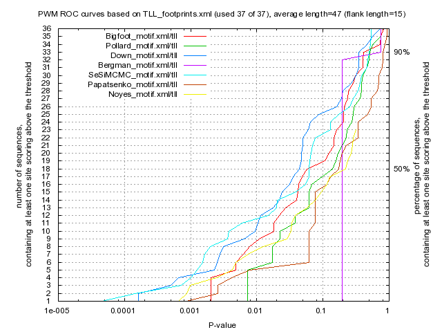

Kulakovskiy I.V., Favorov A.F., Makeev V.J. (2009) Motif discovery and motif finding from genome-mapped DNase footprint data. Bioinformatics 25(18): 2318-2325.
<up> DMMPMM motif TLL comparison [dmmpmm_compare_html]
|  |
motif alignment
motif similarity
|
Bigfoot |
Pollard |
Down |
Bergman |
SeSiMCMC |
Papatsenko |
Noyes |
| Bigfoot |
1.0 |
0.526 |
0.2872 |
0.121 |
0.4555 |
0.2409 |
0.2772 |
| Pollard |
0.526 |
1.0 |
0.2333 |
0.0607 |
0.343 |
0.2503 |
0.2031 |
| Down |
0.2872 |
0.2333 |
1.0 |
0.1094 |
0.3486 |
0.2249 |
0.2041 |
| Bergman |
0.121 |
0.0607 |
0.1094 |
1.0 |
0.1186 |
0.2555 |
0.1148 |
| SeSiMCMC |
0.4555 |
0.343 |
0.3486 |
0.1186 |
1.0 |
0.2564 |
0.304 |
| Papatsenko |
0.2409 |
0.2503 |
0.2249 |
0.2555 |
0.2564 |
1.0 |
0.2385 |
| Noyes |
0.2772 |
0.2031 |
0.2041 |
0.1148 |
0.304 |
0.2385 |
1.0 |
|